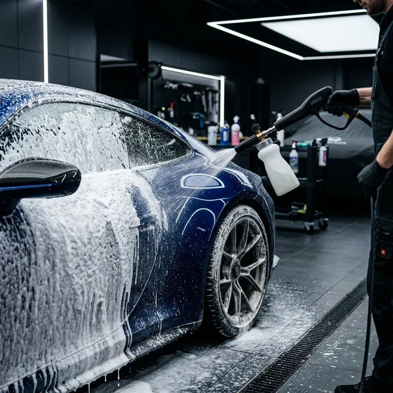

Lavagem detalhada
Limpeza completa da parte externa, com atenção à pintura, às rodas e aos pontos que a lavagem comum costuma deixar passar. É a base para qualquer outro serviço de estética.
Indicada para manter a aparência do carro em dia e como etapa antes de polir ou proteger a pintura.